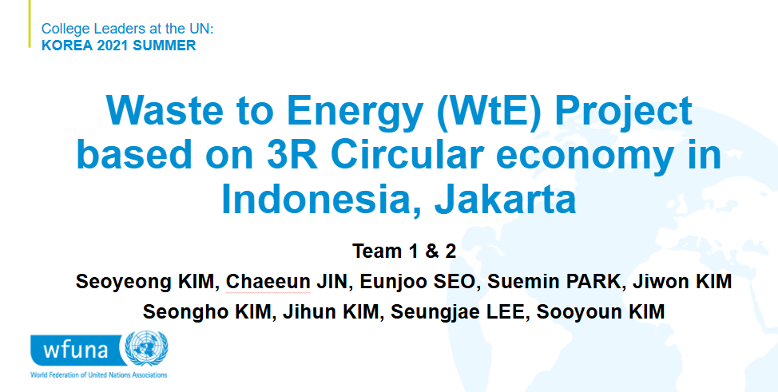
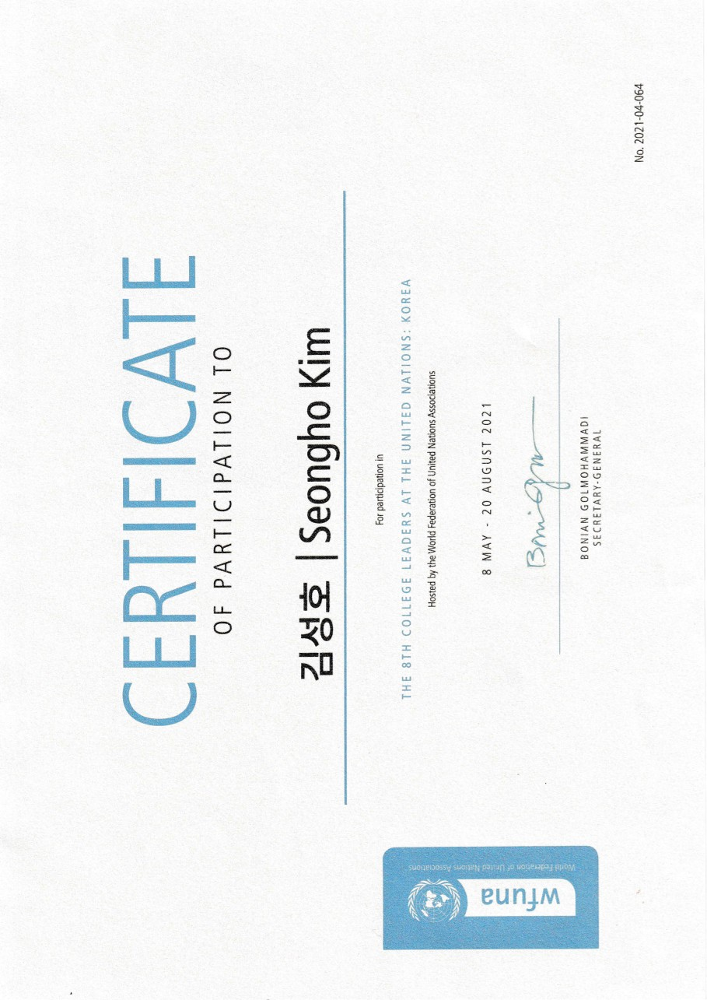

Through WFUNA, I took part in activities connected to global sustainability and community development, with a focus on SDG 16 and practical policy communication. This experience gave me the opportunity to think about how social problems can be framed into actionable proposals and communicated in an international setting.
This experience strengthened my ability to translate broad social issues into structured, solution oriented communication. I learned how global development discussions require both big picture thinking and practical implementation ideas. It also improved my confidence in presenting ideas in formal international contexts and reinforced my interest in work that connects policy, analysis, and real world impact.

